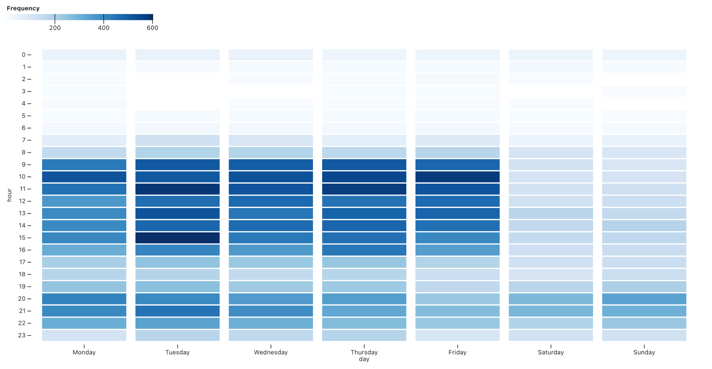

Migrating with tusks and a trunk

Y’all.
I’ve wandered over to Mastodon from Twitter, along with a goodly number of other folks from the broad geo-sphere, and it’s . . . nice. Feel easier to post random musings. Less motive, less image. But I rolled back over to Twitter right quick when I wanted to get into the discussion over a Sunday NYT article about my tiny-ass Vermont city. I have certain communities in my feed, and the #btv folks are still mostly there.
The latest drama is not the first time I’ve considered quitting Twitter altogether. Hell, I probably have another thread exactly like this one from 2016 over there that I’ve long since forgotten about. But I finally decided to look at my involvement holistically.
With my complete archive since 2011 in view, I found that I’ve actually been steadily retreating from Twitter for years now. Hard to say what I’ve replaced it with, but the signs of my disenchantment are clear, even as I probably remain in the top echelon of users.
I’m also pleased to see that I generally treat Twitter like work: I learn from colleagues, share things I think are cool, and stay the hell out of the office on weekends.

It may be that I spend more time on Mastodon now, but I think I’ll keep receding from these spaces. Facebook is already long behind me and I don’t mourn.
I’ll be reading more books and going outside. I know that sounds like a weak new years resolution, but I’m already underway.
In any case, if you’ve got more than a few years on that other hellsite I strongly recommend you check out your own trajectory with this excellent tool from Ian Johnson. Take care of yourselves, and you can find me here (as well as blogging more, apparently):

Late intro:
My name is Bill, and I'm a maker of various sorts of maps, most built of pixels. üõ∞Ô∏è
My brain flits from one geographically-inspired enthusiasm to another: History, Agriculture, Art, and I've accumulated a modest comet's-tail of associated projects in my time. ☄️
I dwell in Vermont's Big City (Burlington, pop. ~42k), and dearly love this place, though Montréal comes in a close second for my affection. ❄️
My politics are of Community and Equality. ‚úä
Pleased to meet you.